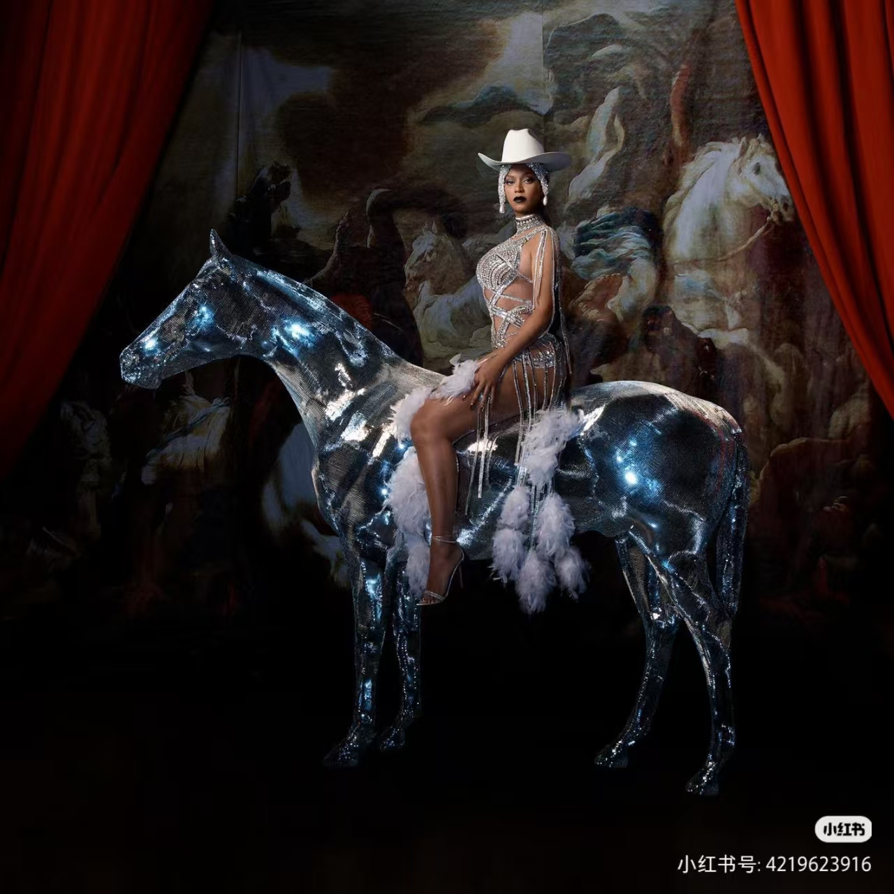
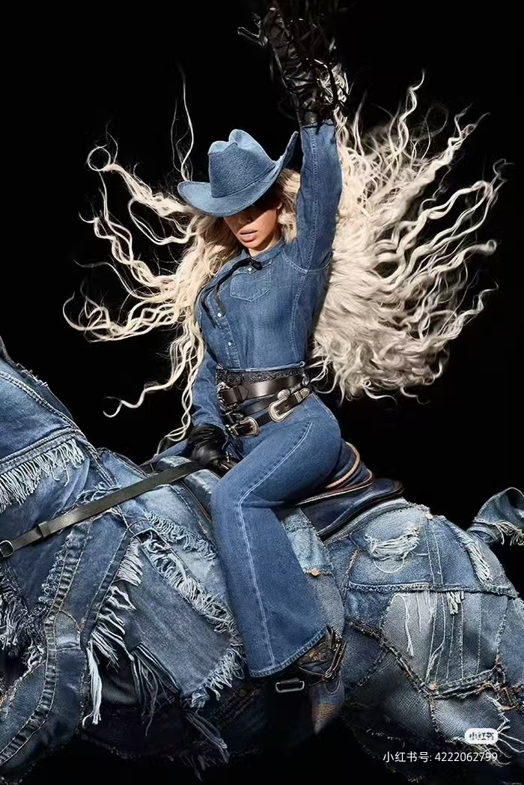
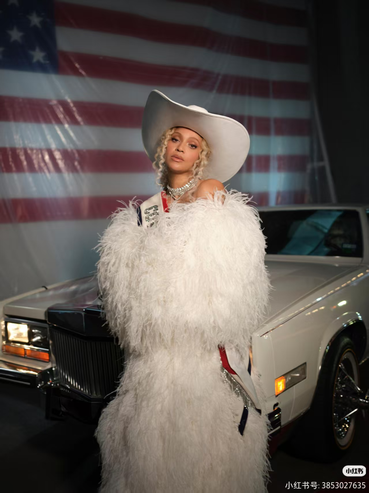
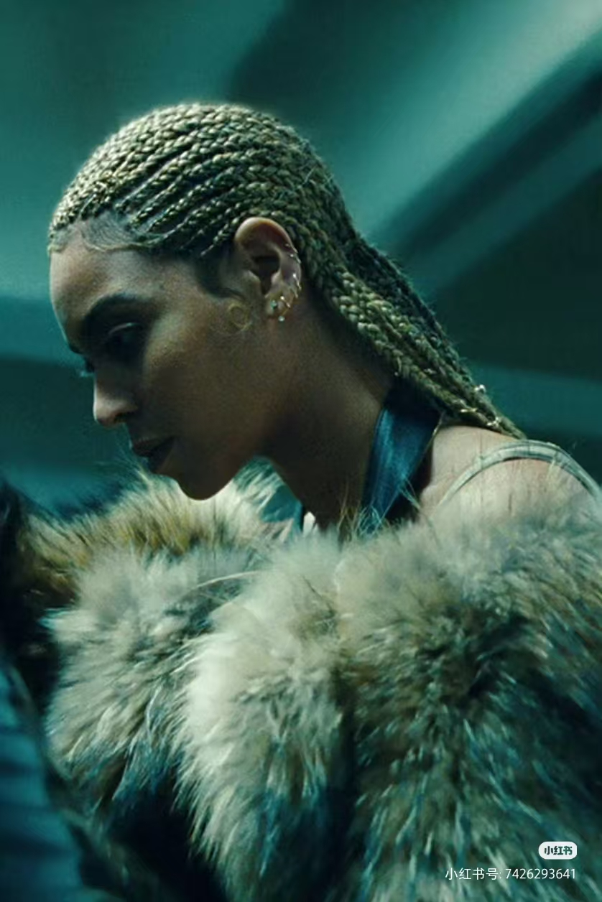
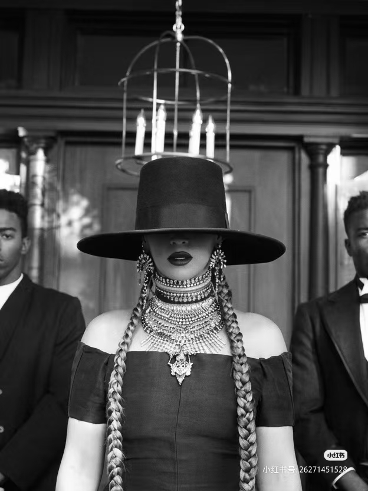

From Destiny's Child to solo icon. Beyoncé doesn't follow trends — she creates them. Lemonade was a visual album. Renaissance celebrated Black dance music. Cowboy Carter proved country is Black music too.
Solo debut. Crazy in Love featuring Jay-Z became an instant classic. 5 Grammys in one night.
Solo debutDouble album. Single Ladies became a cultural phenomenon with its iconic choreography. Halo remains one of her most beloved ballads.
Sasha Fierce eraSurprise visual album. No warning, no promotion — just 14 songs and 17 videos. Changed how albums are released forever.
Surprise dropA visual album about infidelity, Black womanhood, and redemption. Formation sparked nationwide conversation. 9 Grammy nominations.
Visual masterpieceA love letter to Black dance music, ballroom culture, and disco. Break My Soul became the anthem of the summer. 4 Grammys including Best Dance/Electronic Album.
Disco revival"This ain't a country album. It's a Beyoncé album." Texas Hold 'Em made her the first Black woman to top Billboard's Hot Country chart. A 27-track epic featuring Dolly Parton and Willie Nelson.
Genre-defyingRecorded during the pandemic, Renaissance is a celebration of Black queer dance music. From the house-inspired Break My Soul to the Donna Summer-sampling Summer Renaissance, every track is designed for the dance floor.





Born from feeling unwelcome at the Country Music Awards, Cowboy Carter is Beyoncé's reclamation of country music's Black roots. Texas Hold 'Em broke records. Jolene featuring Dolly Parton herself. A 27-track journey through genre, history, and family.
The songs that define the journey — from Destiny's Child to Cowboy Carter.